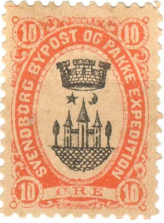
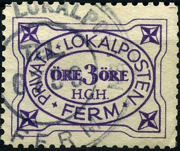
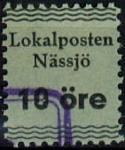
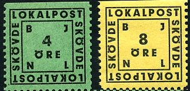

{kind=link}

Return To Catalogue - Aalborg - Drammen - Fredericia - Mandal - Namsos - Tonsberg - Tromso- Viborg
Note: on my website many of the
pictures can not be seen! They are of course present in the
catalogue;
contact me if you want to purchase the catalogue.
Local stamps, (city post) were issued in Norway, Denmark and Sweden. They are known as Bypost stamps. Most of them were issued in the late 19th century. As a consequence of the large number of 'philatelic' issues (stamps issued solely to be sold to stamp collectors), this area became unpopular. Cities that issued bypost stamps are: Aalborg, Aalesund, Aarhus, Arendal, Bergen, Bjorn Oya (?), Christianssund (Kristianssund), Drammen, Fredericia, Goteborg, Grimstad, Hammerfest, Holmestrand, Holte Landpost, Horsens, Hortens, Kobenhavn (Kopenhagen), Kolding, Kragero, Levanger, Malmo, Mandal, Namsos, Odense, Randers, Stenkjaer, Stockholm, Svendborg, Tonsberg, Tromso, Trondhjem (Throndhjem), Vadso, Vardo, Veile and Viborg.
Examples of Bypost stamps:
NOTE: not all the bypost stamps are yet catalogued by me.
A very nice site on Bypost stamps of Norway can be found on: http://www.nordische-staaten.de/laender/Norwegen/Bypost/bypost.html (in German), made by Dr. Reinhard Meyer. This site has more detailed information than I could ever assemble here. I would like to thank him here for letting me use some of his images.
There are a number of Byposts, that didn't issue any stamps. They can be recognized by their cancels. For example, the Christiania bypost in Norway. The cancel used is a three rings cancel with '364' in the center, a single ring cancel with "CHRISTIANIA BYPOST" or "CHRA BYP.". Examples:

For more information see: http://www.nordische-staaten.de/laender/Norwegen/Bypost/bypost.html
It seems that the Copenhagen bypost or "KJOBENHAVNS BYPOST" also issued so-called 'Franco-stamps' (a cancel applied to mass mail). Three different types seem to exist "KJØBENHAVNS BYPOST PORTO 1 ØRE" in a single circle, "KJØBENHAVNS BYPOST FRANKO 2 ØRE" in a single circle and "KJØBENHAVNS BYPOST 3 ØRE" in a single circle. If anybody posesses pictures of these franco-stamps, please contact me!
I have seen the following values: 1 o black (imperforated), 2 o green (imperforated), 3 o violet on yellow (perforated), 3 o blue (perforated or imperforated, with different form of the '3'), 5 o lilac (imperforated), 7 o red (imperforated), 3 o blue with triangular overprint in red, 3 o blue with star overprint and 'O.S.'. By the way, 'øya' means 'island'.
Some local stamps were also issued in the twenties (Goteborg, Helsingborg, Malmo and Stockholm). Other local stamps were issued for example in Sweden just after world war II, for example: Alingas, Boras, Borlange, Eksjo, Eskilstuna, Falkoping, Gavle, Goteborg, Halmstad, Helsingborg, Huskvarna, Jonkoping, Kalmar, Karlskrona, Karlstad, Katrineholm, Kristianstad, Kulma, Landskrona, Lidkoping, Lund, Malmo, Motala, Nassjo, Norrkoping, Orebro, Ostersund, Skara, Skovde, Sodertalje, Stockholm, Sundsvall, Tranas, Trollhattan, Umea, Uppsala, Vanersborg, Varnamo, Vasteras and Vasterik. Usually these stamps have inscription 'Lokalposten' or a similar inscription.
Examples:
This local stamp was issued later (about 1945). The inscription is 'LOKALPOSTEN I BORAS SNABB SAKER', there is a picture of Mercury in the center of the stamp. I have also seen a 4 o blue in the same design

Privata Lokalposten Ferm; 3 o violet
(1944 Halsingborg, 4 o red, a 2 o green, 6 o blue and 6 o lilac
also exist)
(Stockholm and Goteborg in a very similar design)

Södertälje, a 4 o violet on blue value also exists
Norrkoping, town hall(?) I've also seen a 4 o green
(Norrköpings Lokalpost, industrial building, in this design a 8
o blue also exists)
Jönköping, I've also seen the values 8 o and 15 o (same
colours)
Uppsala

'Norway Postmarks of the local posts' by F.A.Brofos.
The Private Local Posts of Denmark
'Norges Byposter og annen norsk lokalpost' by Carl A. Pihl, Bergen 1963
I would like to thank Dr. Reinhard Meyer and Lasse Hult for setting some of the images of the Bypost stamps at my disposal.
{kind=link}
{kind=link}